As tabelas HTML permitem que os desenvolvedores da web organizem os dados em linhas e colunas.
Células de mesa Uma tabela em HTML consiste em células de tabela dentro de linhas e colunas.
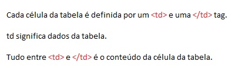Linhas de mesa

Cabeçalhos de Tabela
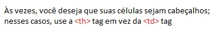O código dessa tabela é: 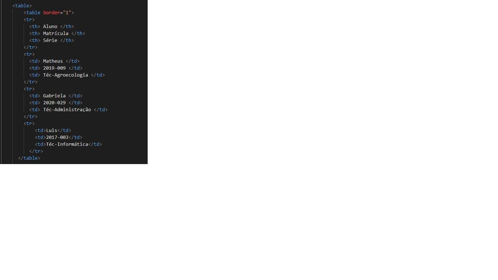
| Aluno | Matrícula | Série |
|---|---|---|
| Matheus | 2019-009 | Téc-Agroecologia |
| Gabriela | 2020-029 | Téc-Administração |
| Luis | 2017-003 | Téc-Informática |
O elemento del (ou Elemento HTML de Texto Excluído) representa uma parte do texto que foi excluída de um documento.
Já o elemento ins destaca o que está dentro da sua marcação.
"As bibliotecas estavam cheias de ideias, talvez a mais perigosa e poderosa de
todas as coisas armas." -Sarah J Mass
Para que o texto fique assim, o código é o seguinte:
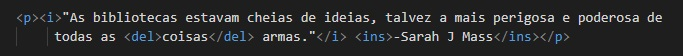A tag sub vem do "subscript" e a sup vem do "superscript"
Subscript deixa o texto abaixo do alinhamento
Superscript deixa o texto acima do alinhamento
A imagem que representa esse exemplo é:
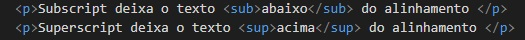Blockquote é um bloco de notas,utilizado para citar textos de outros lugares. Já q faz a mesma coisa, mas com textos curtos.
"E eu entendo.
Eu entendo por que as pessoas dão as mãos:
Eu sempre pensei que era sobre possessividade, dizendo''Este é meu''.
Mas trata-se de manter contato.
Trata-se de falar sem palavras.
É sobre eu quero você comigo e não vá."
-Cassandra Clare
"Só os mais fracos de espírito se recusam a ser influenciados pela literatura e a poesia."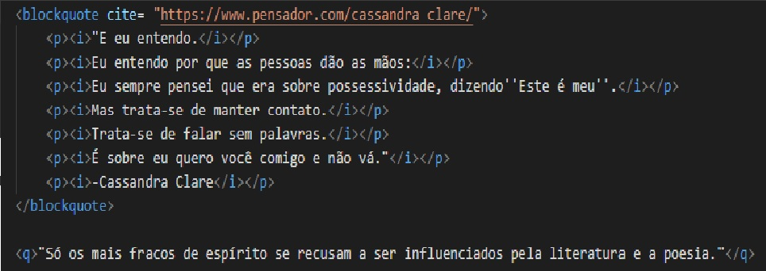
A tag abbr serve para explicar uma abreviação.
No livro Shatter-me, Aaron Warner cita Shakespeare
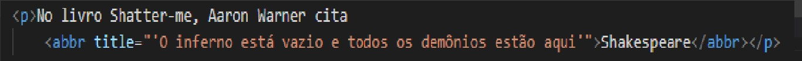A tag Adress é usada para incorporar um link ao seu site.
O código é:
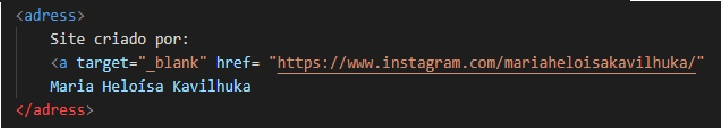A tag Cite serve para citar o autor da obra/trabalho referenciado.
O Grito - Vicent Van Gogh
A tag Bdo significa 'Substituição bidirecional', serve para dizer qual a direção que o texto deve ser exibido.
Este texto será exibido ao contrário! 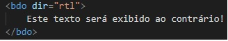A tag code serve para inserir um trecho de código em seu site
A tagcite serve para colocarmos citações na página.
Desta forma:
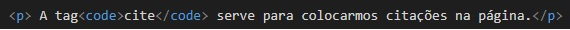A tag PRE tem como objetivo inserir um texto pré formatado.
Não discuto
não discuto
com o destino
o que pintar
eu assino
-Paulo Leminski
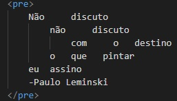
A tag Kbd mostra as teclas para o usuário. CTRL+ C copia o texto.
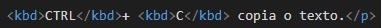